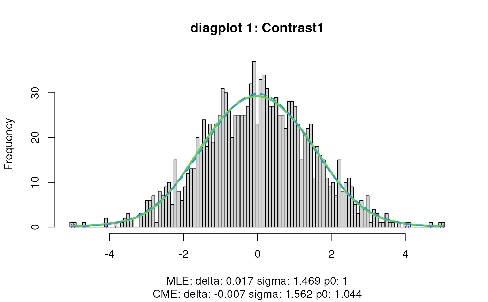
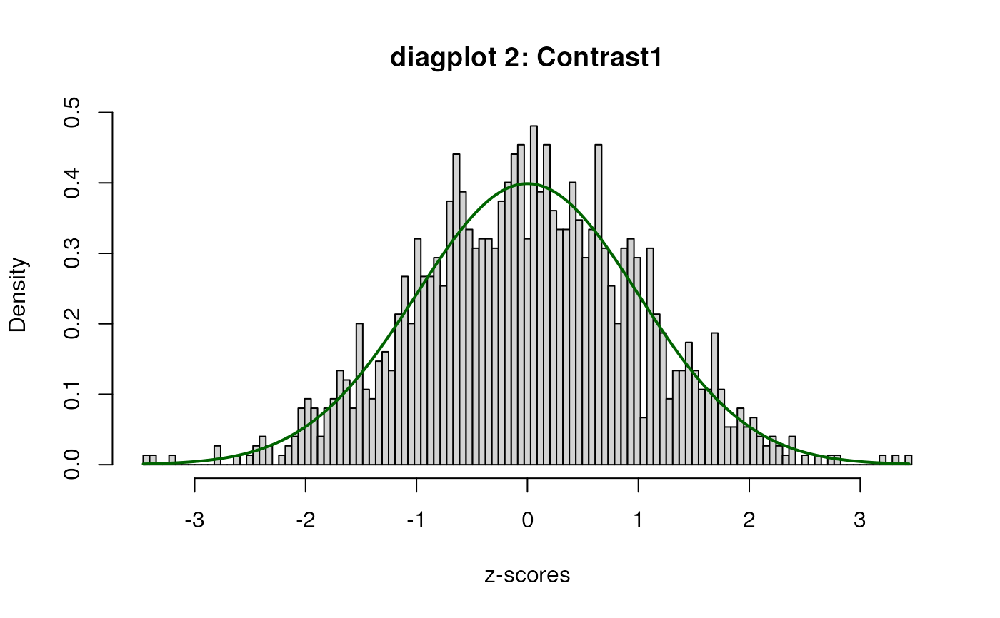
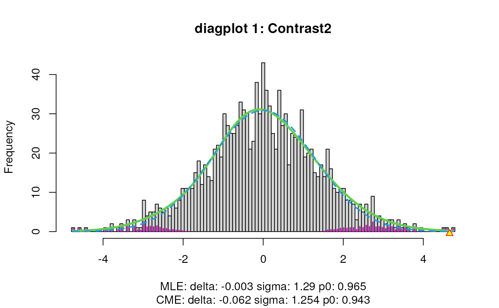
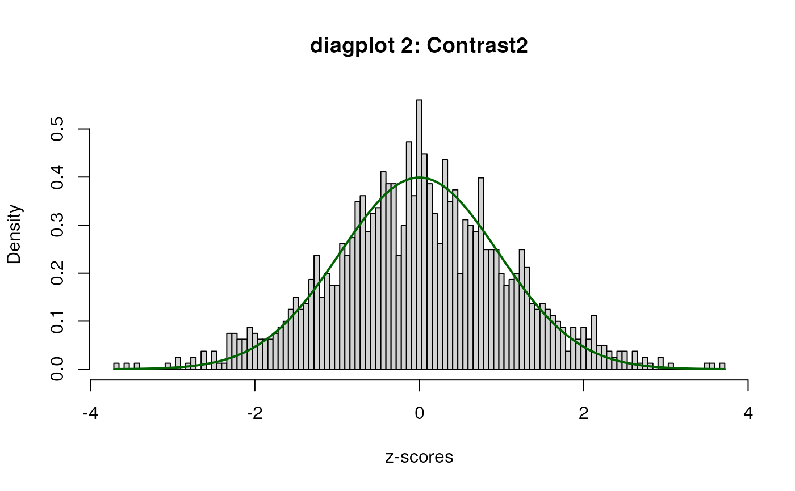

Plot function to visualize differential transcript usage (DTU)
plotDTU(
object,
contrast,
groups,
coefficients,
summaryStat = "model",
transcripts = NULL,
genes = NULL,
top.n = 6
)A `SummarizedExperiment` containing the models and results of the DTU analysis as obtained by the `fitDTU` and `testDTU` function from this `satuRn` package, respectively.
Specifies the specific contrast for which the visualization should be returned. This should be one of the column names of the contrast matrix that was provided to the `testDTU` function.
A `list` containing two character vectors. Each character vector contains the names (sample names or cell names) of the respective groups in the target contrast.
A `list` containing two numeric vectors. Each numeric vector specifies the model coefficient of the corresponding groups in the selected contrast.
Which summary statistic for the relative usage of the transcript should be displayed. `Character` or `character vector`, must be any of following summary statistics; model (default), mean or median.
A `character` or `character vector` of transcript IDs, to specify which transcripts should be visualized. Can be used together with `genes`. If not specified, `plotDTU` will check if the `genes` slot is specified.
A single `character` or `character vector` of gene IDs, to specify the genes for which the individual transcripts should be visualized. Can be used together with `transcripts`. If not specified, `plotDTU` will check if the `transcripts` slot is specified.
A `numeric` value. If neither `transcripts` nor `genes` was was specified, this argument leads to the visualization of the `n` most significant DTU transcripts in the contrast. Defaults to 6 transcripts.
A ggplot object that can be directly displayed in the current R session or stored in a list.
data(sumExp_example, package = "satuRn")
library(SummarizedExperiment)
#> Loading required package: MatrixGenerics
#> Loading required package: matrixStats
#>
#> Attaching package: ‘MatrixGenerics’
#> The following objects are masked from ‘package:matrixStats’:
#>
#> colAlls, colAnyNAs, colAnys, colAvgsPerRowSet, colCollapse,
#> colCounts, colCummaxs, colCummins, colCumprods, colCumsums,
#> colDiffs, colIQRDiffs, colIQRs, colLogSumExps, colMadDiffs,
#> colMads, colMaxs, colMeans2, colMedians, colMins, colOrderStats,
#> colProds, colQuantiles, colRanges, colRanks, colSdDiffs, colSds,
#> colSums2, colTabulates, colVarDiffs, colVars, colWeightedMads,
#> colWeightedMeans, colWeightedMedians, colWeightedSds,
#> colWeightedVars, rowAlls, rowAnyNAs, rowAnys, rowAvgsPerColSet,
#> rowCollapse, rowCounts, rowCummaxs, rowCummins, rowCumprods,
#> rowCumsums, rowDiffs, rowIQRDiffs, rowIQRs, rowLogSumExps,
#> rowMadDiffs, rowMads, rowMaxs, rowMeans2, rowMedians, rowMins,
#> rowOrderStats, rowProds, rowQuantiles, rowRanges, rowRanks,
#> rowSdDiffs, rowSds, rowSums2, rowTabulates, rowVarDiffs, rowVars,
#> rowWeightedMads, rowWeightedMeans, rowWeightedMedians,
#> rowWeightedSds, rowWeightedVars
#> Loading required package: GenomicRanges
#> Loading required package: stats4
#> Loading required package: BiocGenerics
#>
#> Attaching package: ‘BiocGenerics’
#> The following objects are masked from ‘package:stats’:
#>
#> IQR, mad, sd, var, xtabs
#> The following objects are masked from ‘package:base’:
#>
#> Filter, Find, Map, Position, Reduce, anyDuplicated, aperm, append,
#> as.data.frame, basename, cbind, colnames, dirname, do.call,
#> duplicated, eval, evalq, get, grep, grepl, intersect, is.unsorted,
#> lapply, mapply, match, mget, order, paste, pmax, pmax.int, pmin,
#> pmin.int, rank, rbind, rownames, sapply, setdiff, sort, table,
#> tapply, union, unique, unsplit, which.max, which.min
#> Loading required package: S4Vectors
#>
#> Attaching package: ‘S4Vectors’
#> The following objects are masked from ‘package:base’:
#>
#> I, expand.grid, unname
#> Loading required package: IRanges
#> Loading required package: GenomeInfoDb
#> Loading required package: Biobase
#> Welcome to Bioconductor
#>
#> Vignettes contain introductory material; view with
#> 'browseVignettes()'. To cite Bioconductor, see
#> 'citation("Biobase")', and for packages 'citation("pkgname")'.
#>
#> Attaching package: ‘Biobase’
#> The following object is masked from ‘package:MatrixGenerics’:
#>
#> rowMedians
#> The following objects are masked from ‘package:matrixStats’:
#>
#> anyMissing, rowMedians
sumExp <- fitDTU(
object = sumExp_example,
formula = ~ 0 + group,
parallel = FALSE,
BPPARAM = BiocParallel::bpparam(),
verbose = TRUE
)
group <- as.factor(colData(sumExp)$group)
design <- model.matrix(~ 0 + group)
colnames(design) <- levels(group)
L <- matrix(0, ncol = 2, nrow = ncol(design))
rownames(L) <- colnames(design)
colnames(L) <- c("Contrast1", "Contrast2")
L[c("VISp.L5_IT_VISp_Hsd11b1_Endou", "ALM.L5_IT_ALM_Tnc"), 1] <- c(1, -1)
L[c("VISp.L5_IT_VISp_Hsd11b1_Endou",
"ALM.L5_IT_ALM_Tmem163_Dmrtb1"), 2] <- c(1, -1)
sumExp <- testDTU(object = sumExp,
contrasts = L,
diagplot1 = FALSE,
diagplot2 = FALSE,
sort = FALSE)




group1 <- rownames(colData(sumExp))[colData(sumExp)$group ==
"VISp.L5_IT_VISp_Hsd11b1_Endou"]
group2 <- rownames(colData(sumExp))[colData(sumExp)$group ==
"ALM.L5_IT_ALM_Tnc"]
plots <- plotDTU(
object = sumExp,
contrast = "Contrast1",
groups = list(group1, group2),
coefficients = list(c(0, 0, 1), c(0, 1, 0)),
summaryStat = "model",
transcripts = c("ENSMUST00000165123",
"ENSMUST00000165721",
"ENSMUST00000005067"),
genes = NULL,
top.n = 6
)